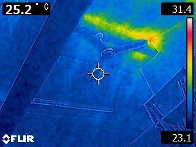

赤外線カメラで雨漏り原因を特定｜調査事例と発見できる症状を解説
公開日：2026年2月25日
実際の赤外線カメラ調査事例を写真付きで紹介。外壁・屋根・ベランダの雨漏りを温度分布で可視化し、目に見えない浸水箇所を特定した診断実績を公開。

赤外線画像で雨漏り原因を可視化
こんな雨漏りトラブルありませんか？
- 修理したのに雨漏りが再発する
- 雨染みがあるのに原因箇所が見つからない
- 複数箇所から雨漏りしている可能性がある
- 壁の中や天井裏の状態が心配
町田市や横浜青葉区で実施した赤外線カメラでの雨漏り診断事例を紹介します。実際の診断画像とともに、どのように雨漏り原因を特定したのかを詳しく解説します。
事例1：外壁クラックからの雨漏り（町田市・築25年）
お客様の症状
- 2階の和室の壁に雨染みが出現
- 台風や大雨の後に必ず雨染みが広がる
- 目視では外壁に異常が見当たらない
赤外線カメラ診断の結果
📸 発見された症状
- ● 外壁の目地（サイディングの継ぎ目）に幅0.3mmの微細なクラックを発見
- ● 赤外線画像で、クラックから壁内部への水の浸入経路を可視化
- ● 雨染みの位置と、クラックの位置が約1.5m離れていることが判明（水が斜めに流れ込んでいた）
💡 赤外線画像で分かったこと
目視では気づかない微細なクラックが、赤外線画像では周囲より5℃低い青色の線として明確に表示されました。さらに、クラックから壁内部に水が浸透し、断熱材を伝って斜め下に流れている様子も確認できました。
実施した修理と結果
1️⃣ クラック部分のシーリング補修
変成シリコンシーリング材でクラックを完全に充填
2️⃣ 濡れた断熱材の交換
壁内部の断熱材を部分的に交換し、乾燥処理を実施
3️⃣ 修理後の赤外線カメラ再診断
修理後、大雨の翌日に再診断を実施。温度分布が正常化し、雨漏りが完全に止まったことを確認
✅ お客様の声：「何度修理しても止まらなかった雨漏りが、赤外線カメラで原因を特定してもらい、ようやく解決しました！」
事例2：谷樋からの雨漏り（横浜青葉区・築30年）
お客様の症状
- 1階の天井から雨漏り（雨が強い時だけ）
- 屋根を目視調査しても異常が見つからない
- 別の業者に2回修理してもらったが止まらない
赤外線カメラ診断の結果
📸 発見された症状
- ● 谷樋（屋根の谷部分の雨樋）の溶接部分に微細な穴を発見
- ● 赤外線画像で、穴から漏れた水が野地板を伝って天井裏に流れ込んでいる様子を確認
- ● 天井裏の断熱材が約2m²の範囲で濡れていることが判明
💡 なぜ従来の調査では発見できなかったのか？
谷樋の穴は直径わずか2mm程度で、目視では確認できませんでした。また、別の業者は「瓦のズレ」を雨漏り原因と判断し、瓦を修理していましたが、実際の原因は谷樋だったため、修理後も雨漏りが止まりませんでした。
赤外線カメラで温度分布を調べることで、水の流れている経路が一目で分かり、正確な原因箇所を特定できました。
実施した修理と結果
1️⃣ 谷樋の全面交換
劣化した銅製谷樋をステンレス製に交換
2️⃣ 天井裏の断熱材交換と乾燥
濡れた断熱材を撤去し、野地板を乾燥後、新しい断熱材を設置
3️⃣ 防水シート補強
谷樋周辺の防水シートを二重に施工し、万全の防水対策
✅ お客様の声：「2回も修理したのに止まらなかった雨漏りが、赤外線カメラのおかげでようやく原因が分かりました。もっと早く相談すればよかったです。」
事例3：ベランダ防水層の劣化（麻生区・築20年）
お客様の症状
- ベランダ直下の部屋の天井に雨染み
- ベランダの床面にひび割れは見えない
- どこから雨漏りしているのか全く分からない
赤外線カメラ診断の結果
📸 発見された症状
- ● ベランダ床面の防水層が全体的に劣化し、微細なクラックが複数存在
- ● 赤外線画像で、排水口周辺と手すり支柱の根元から水が浸入していることを確認
- ● ベランダ下の天井裏に約3m²の範囲で水が溜まっていることが判明
⚠️ 重大な発見
赤外線カメラで調査したところ、ベランダ下の天井裏に大量の水が溜まっていることが判明しました。このまま放置すると、天井が抜け落ちる危険性がありました。目視調査では絶対に発見できなかった重大な症状です。
実施した修理と結果
1️⃣ 緊急排水処理
天井裏に溜まった水を排水し、木材の乾燥処理を実施
2️⃣ ベランダ防水工事
古い防水層を剥がし、FRP防水で全面再施工
3️⃣ 手すり支柱の防水処理
支柱の根元にシーリング材を充填し、水の浸入を完全に遮断
4️⃣ 天井裏の防湿処理
天井裏に防湿シートを設置し、万が一の浸水に備える
✅ お客様の声：「天井が抜け落ちる寸前だったなんて…。赤外線カメラで早期発見してもらえて本当に良かったです。命拾いしました。」
赤外線カメラで発見できる雨漏りの症状一覧
目視では見えない症状
- 幅0.5mm以下の微細なクラック
- 壁内部・天井裏の水の浸入経路
- 断熱材の濡れている範囲
- シーリング内部の劣化
- 防水層の微細な穴・ひび割れ
初期段階で発見できる症状
- 雨染みが出る前の水分侵入
- 外壁・屋根の初期劣化
- 結露による湿気の蓄積
- 配管の微細な漏水
- 断熱欠損（ヒートブリッジ）
正確な位置を特定できる
- 複数箇所の雨漏り原因
- 水の流れる経路・方向
- 二次被害の範囲（腐食・カビ）
- 修理が必要な範囲の特定
- 修理後の効果確認
雨漏り以外も発見できる
- 給水・排水管の漏水
- 断熱材の施工不良
- 結露の発生しやすい箇所
- 電気配線の異常発熱
- 建物の熱損失箇所
当社の赤外線カメラ診断実績
診断実績（2024年〜2026年）
350件
赤外線診断実施件数
92%
原因特定成功率
98%
修理後の再発防止率
診断が特に有効だったケース
🏆 複数箇所からの雨漏り
外壁と屋根の2箇所から同時に雨漏りしているケースを1回の診断で全て特定
🏆 他社で原因不明だった雨漏り
3社に調査してもらっても原因が分からなかった雨漏りを特定
🏆 修理しても再発する雨漏り
見当違いの場所を修理していたケースで、真の原因箇所を発見
🏆 初期段階の雨漏り発見
雨染みが出る前の段階で水の浸入を発見し、被害を最小限に抑制
よくある質問
赤外線カメラで診断できない雨漏りはありますか？
以下のケースでは診断が難しい場合があります：
- 雨漏りが完全に止まっており、長期間乾燥している
- 極めて少量の水しか浸入していない
- 直射日光で建物全体が高温になっている（調査の時間帯を調整します）
その場合は、散水調査など他の方法と組み合わせて診断します。
診断だけで修理はしなくてもいいですか？
もちろん可能です。診断結果と赤外線画像をお渡しします。他社で修理される場合でも、正確な診断情報が役立ちます。
※診断は完全無料です。無理な営業は一切いたしません。
赤外線画像はもらえますか？
はい、診断時に撮影した赤外線画像を全てお渡しします。
データ形式：JPEGまたはPDF / お渡し方法：LINEまたはメール
マンションやアパートでも診断できますか？
はい、診断可能です。戸建て・マンション・アパート・店舗など、全ての建物で赤外線カメラ診断を実施できます。
※マンション・アパートの場合、管理組合や大家さんの許可が必要な場合があります。
まとめ：赤外線カメラで正確な雨漏り診断を
実績350件：町田・青葉区・麻生区で多数の診断実績
原因特定率92%：目視では発見できない雨漏りを特定
再発防止率98%：正確な診断で無駄な修理を回避
無料診断実施中：赤外線カメラ診断を完全無料で提供
即日対応可能：最短で当日中に診断実施
雨漏りの原因がわからず困っている方、何度修理しても止まらない方は、赤外線カメラでの無料診断をぜひご利用ください。